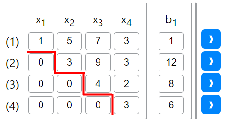

Diese Seite kann genutzt werden, um ein Gleichungssystem zu lösen.
Dabei kann ein Gleichungssystem flexibler Größe angegeben werden. Die Anzahl der Gleichungen, der
Variablen und rechten Seiten können über die entsprechenden Eingabefelder oben auf der Seite
spezifiziert werden. Nun können entweder eigene Werte für das Gleichungssystem eingegeben werden,
oder eine zufällige Aufgabe über den Button "Aufgabe erstellen" kreiert werden (oben rechts).
Dieses Gleichungssystem kann nun entweder vom System gelöst werden oder schrittweise selbst durch
entsprechende Zeilenoperationen. Zur Lösung durch das System muss lediglich der Button "Lösen"
betätigt werden, der das Gleichungssystem über den Gauß-Algorithmus löst und die Lösung in der
unteren Kachel der Seite darstellt.
Zur eigenen schrittweisen Lösung müssen Zeilenoperationen verwendet werden, um das Gleichungssystem
gemäß dem Gauß-Algorithmus in die Stufenform zu bringen. Für die Stufenform müssen Nullen so erzeugt
werden, dass die Matrix unter der Hauptdiagonalen überall Null ist. Die untenstehende Grafik
veranschaulicht dies. Nun kann durch Rückwärtseinsetzen die Lösung berechenet werden. Das heißt, es
wird mit der letzten Zeile begonnen und diese nach der Unbekannten aufgelöst. Diese Lösung wird in
die vorherige Zeile eingesetzt, die wiederum nach der nächsten Unbekannten aufgelöst wird. Dies wird
solange wiederholt, bis alle unbekannten bestimmt sind.

- Verwendung von Zeilenoperationen
- Funktionsweise von "Berechne" und "Hoch" Buttons
- Eine, keine oder unendlich viele Lösungen.